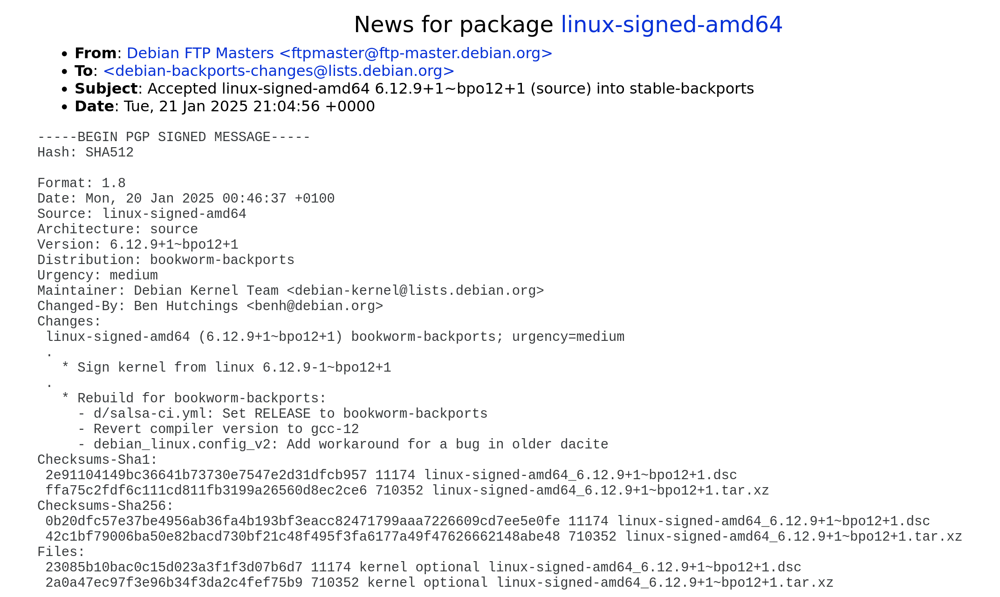

Обновление ядра в stable-backports

Пользователям Debian можно обновиться на свежий LTS ядра Linux. Теперь доступно ядро Linux версии 6.12. Обновил и свою систему. Наблюдения следующие.
Наконец-то можно выкинуть amd_pstate=active из cmdline в GRUB. Теперь amd-pstate-epp стал драйвером по умолчанию.
К слову, проверить текущий драйвер можно так:
$ cpupower frequency-info | grep 'driver'
driver: amd-pstate-epp
У видеокарт AMD серии RX 7000 перестали “застревать” частоты VRAM. Я частенько получал максимальную частоту в 775 MHz с ядром версии 6.11. А ожидал 1250 MHz. Приходилось выправлять руками…
В LTS остались только проблемы с редкими графическими артефактами после выхода ПК из спящего режима. Надеюсь, что и это решится. А пока меняю частоту обновления экрана. Это помогает устранить артефакты до следующего “сна”.
Прогнал несколько тестов на новом ядре. Регресса не увидел ни в “попугаях” от Cinebench R23, ни в FPS у Cyberpunk 2077. Простые игровые сессии проблем не вызывают.
В общем, если пользуетесь stable-backports с платформой AMD, рекомендую обновиться.